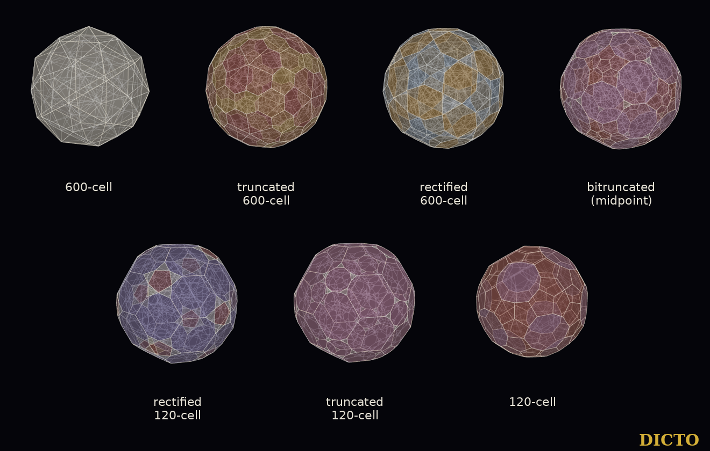

The five stages from the 600-cell to the 120-cell, built from the White Queen, with their slices and shadows
* Named the White Queen in DICTO's books. ** Named the Red Queen in DICTO's books.
The 600-cell and the 120-cell are polar partners. Between them lies a path of solids, each made by cutting the 600-cell's corners a little deeper.
In ordinary space the icosahedron becomes the dodecahedron in the same way. Cut its twelve corners a third of the way along each edge and it becomes the truncated icosahedron: 12 pentagons and 20 hexagons. Cut to the middle of each edge and it is the icosidodecahedron; cut further and it becomes the truncated dodecahedron, and at last the dodecahedron. Take the four-dimensional version: an icosahedron with hexagons, in the fourth dimension. It is the midpoint of the same path one dimension up, from the 600-cell to the 120-cell.
The two ends share one system of 360 walls through the centre, the 60 mirrors and 300 cross walls, and later work finds shapes hidden in those walls, which DICTO calls cats, among them the Golden Truncated 5-cell and the Golden Cantellated 5-cell in the 600-cell, and their polar duals in the 120-cell (#110, Walls of Silence; Alicia in Wonderland, Chapters 10 and 11).

Each stage is a set of points chosen on the 600-cell's own edges, triangles or cells; nothing else is needed.
We take the 600-cell of #63: 120 corners, 720 edges of length e, 1200 triangles, 600 tetrahedra. Its polar partner's corners are the centres of its cells, and two of them are joined when the two cells share a triangle (#65): 1200 edges of the 120-cell, of length f.
| Stage | Corners built from the 600-cell | Corners | Edges | Cells |
|---|---|---|---|---|
| 600-cell | its corners | 120 | 720 | 600 tetrahedra |
| truncated 600-cell | on each edge, 1/3 of the way from each end | 1440 | 4320 | 120 icosahedra, 600 truncated tetrahedra |
| rectified 600-cell | the middle of each edge | 720 | 3600 | 120 icosahedra, 600 octahedra |
| bitruncated 600-cell | on each triangle, 3/5 of the way from the middle of each of its edges to its centre | 3600 | 7200 | 120 truncated icosahedra, 600 truncated tetrahedra |
| rectified 120-cell | the centre of each triangle | 1200 | 3600 | 120 icosidodecahedra, 600 tetrahedra |
| truncated 120-cell | on each edge of the 120-cell, (5 − √5)/10 of the way from each end | 2400 | 4800 | 120 truncated dodecahedra, 600 tetrahedra |
| 120-cell | the centres of the 600-cell's cells | 600 | 1200 | 120 dodecahedra |
Table 1. The seven solids. The counts are the classical ones; we checked them on our models, together with the cells (each cell is the set of corners highest along one of the 600-cell's 120 corner directions or 600 cell directions).
Proposition 1 (the cuts). With the corners of Table 1, every edge of each stage has one length exactly when the cuts are at 1/3 (truncated 600-cell), 3/5 (bitruncated) and (5 − √5)/10 (truncated 120-cell); the rectified stages need no choice.
Proof. Truncated 600-cell. Its edges are of two kinds: round each corner of the 600-cell, between the points on two of its edges at that corner, length s·e (two edges at a corner meet at 60°); and along each of its edges, between its two points, length (1 − 2s)·e. They are equal exactly when s = 1/3. Bitruncated. In a triangle abc let mab be the middle of ab and g the centre; the corner on ab is q = (1 − l)·mab + l·g. Within the triangle, qab to qac has length (1 − l)·|mab − mac| = (1 − l)·e/2. Between the triangles abc and abd of one tetrahedron, the two corners on ab are l·|gabc − gabd| = l·|c − d|/3 = l·e/3 apart. Equal exactly when (1 − l)/2 = l/3, that is l = 3/5. Truncated 120-cell. Along an edge of the 120-cell the two corners are (1 − 2t)·f apart; round a corner P of the 120-cell, the corners on the edges PQ and PR are t·|Q − R| apart, and Q and R, two neighbours of P on one pentagon, are a pentagon diagonal φ·f apart. Equal exactly when t·φ = 1 − 2t, that is t = 1/(φ + 2) = (5 − √5)/10. Rectified stages. Middles of edges, and centres of triangles, are joined only to their nearest neighbours, all at one distance (e/2 and e/3). ∎
The cuts were also found numerically, independently, by asking that every corner's nearest neighbours be equally far; the values agree to 10−14 (study cuts.py). In the app the stages are built the same way, from the 600-cell's model, and checked: corners and edges as in Table 1, all corners on one sphere, all edges of one length.
Later results on the path. With circumradius 1 the path is the sweep S(μ) = 600-cell ∩ μ·120-cell of #91, and the three uniform members of that sweep, μ = (9 + √5)/12, (11 + 3√5)/20 and (15 + 8√5)/38, are the cuts of Proposition 1: the truncated 600-cell, the bitruncated midpoint and the truncated 120-cell (#91, Section 6). The 600-cell and the 120-cell are spherical 11-designs, and so is every stage, because every orbit of their symmetry group is one (Goethals and Seidel, 1981; Alicia in Wonderland, Chapter 9, Theorem 1). Near μ ≈ 0.924, where each edge is cut about 0.397 of the way from each end, deeper than the uniform 1/3, the truncated 600-cell's 1440 corners are, numerically, a spherical 19-design: an orbit of the kind Goethals and Seidel gave, here as a station of the path (Alicia in Wonderland, Chapter 9, §5.2; study 2026-11-04-harmonic-4d). Cut at 1/(1 + φ²) instead, the truncated 600-cell has golden hexagons and its faces lie exactly on the 360 walls of Section 1, 20 hexagons on each mirror and 8 triangles on each cross wall: DICTO's Valley Charge (#110, Proposition 6; Alicia in Wonderland, Chapter 10).
A four-dimensional solid can be seen by its shadows and by its slices. We give both, for every stage, in the four directions the 600-cell and the 120-cell were mapped in.
The four main directions are those of #63: along a corner of the 600-cell (vertex first), the middle of an edge (edge first), the centre of a triangle (face first) and the centre of a cell (cell first). In each, the slices are cut at every height where a corner lies and halfway between neighbouring heights, from the centre to the tip; between two neighbouring heights the slice keeps one pattern (#63, Lemma), so this list is complete. All seven solids have a centre of symmetry, so the other half repeats this one.
Theorem. (1) In the four main directions the five stages have the numbers of slices, the numbers of different slice patterns and the shadows of Table 2: 288, 138, 478, 180 and 318 slices from the centre to the tips, 1402 in all. (2) At the two ends the same count gives the exact atlases: the 600-cell's 62 slices and 4 shadows (#63) and the 120-cell's 124 slices and 4 shadows (#65). (3) In every direction the shadows of the truncated and the rectified 600-cell have the same number of faces (110, 232, 272, 194), and so do the shadows of the rectified and the truncated 120-cell (102, 252, 296, 242).
| Solid | Slices v · e · f · c | All | Patterns v · e · f · c | Shadows, corners/faces: v · e · f · c |
|---|---|---|---|---|
| 600-cell | 9 · 17 · 21 · 15 | 62 | 7 · 15 · 19 · 14 | 42/80 · 52/80 · 56/96 · 44/78 |
| truncated 600-cell | 29 · 85 · 103 · 71 | 288 | 21 · 77 · 98 · 62 | 192/110 · 280/232 · 312/272 · 240/194 |
| rectified 600-cell | 17 · 39 · 49 · 33 | 138 | 16 · 35 · 49 · 33 | 132/110 · 150/232 · 168/272 · 144/194 |
| bitruncated | 43 · 135 · 175 · 125 | 478 | 23 · 110 · 151 · 97 | 240/122 · 580/312 · 636/368 · 504/266 |
| rectified 120-cell | 21 · 49 · 65 · 45 | 180 | 14 · 46 · 60 · 41 | 140/102 · 260/252 · 282/296 · 240/242 |
| truncated 120-cell | 33 · 87 · 117 · 81 | 318 | 12 · 69 · 96 · 62 | 200/102 · 500/252 · 564/296 · 480/242 |
| 120-cell | 15 · 33 · 45 · 31 | 124 | 8 · 29 · 40 · 24 | 80/42 · 160/92 · 180/104 · 158/84 |
Table 2. The atlas. v, e, f, c: the 600-cell's vertex-first, edge-first, face-first and cell-first directions (for the 120-cell these are its cell, pentagon, edge and corner directions, in that order). A pattern is a slice's corners, edges, faces and faces by sides; two slices of one direction with the same counts are one pattern. Every three-dimensional slice and every shadow satisfies Euler's formula V − E + F = 2.
Proof and checks. Each slice is the convex hull of the solid's corners at that height and the points where its edges cross it, found in the three-dimensional space of the cut; faces are the coplanar parts of the hull, each counted by its true corners. The computation is in double precision with a tolerance of 10−9; it is checked at both ends against the exact atlases in ℚ(√5) of #63 and #65 (the numbers of slices in all four directions, 62 and 124, and the corners and faces of all 8 shadows agree), and by Euler's formula on every three-dimensional slice and every shadow. The shadows were computed a second time by the app's own hull code: the two agree on all 23 shadows the study gives; in the cell-first direction the study's merging of coplanar faces failed Euler's check for the five stages, and those five shadows are the app's, each checked by Euler's formula. Part (3) is read off the table. ∎
All triangles. The 600-cell has twelve slices made only of triangles (#63; here 5, 2, 1 and 4 in the four directions). Of the stages, only the truncated 600-cell (3, vertex first), the rectified 600-cell (1 vertex first, 1 cell first), the rectified 120-cell (1, cell first) and the truncated 120-cell (3, cell first) have any; the bitruncated midpoint has none. The last slice at the tip is a single corner, an edge, a polygon or a whole cell, depending on the solid and the direction (study data).
Halfway from the 600-cell to the 120-cell the solid is its own partner: cut from either end, the same shape appears.
The bitruncated 600-cell is also the bitruncated 120-cell: cutting the 120-cell's corners as deeply from its side reaches the same solid, which is why it stands at the middle of the path. Its 120 truncated icosahedra are those of DICTO's proposal; its 600 truncated tetrahedra fill the places of the 600-cell's cells. Its shadows are the richest in Table 2, up to 636 corners; its slices number 478, a third of all the slices of the five stages.
DICTO saw again (10 November 2026) that the truncated icosahedron, the cell of this midpoint, is the body between the two ends; a later study rebuilt the midpoint as in Table 1 and found again its 3600 corners and 720 cells, 120 truncated icosahedra and 600 truncated tetrahedra (study 2026-11-10-t600-scutoid). On each of the 60 mirrors the midpoint carries 20 triangles and 12 pentagons, the faces between its truncated tetrahedra and between its truncated icosahedra; its 2400 hexagons, where the two kinds meet, lie on 1200 plates through the centre that are on no wall (#110, Section 7; Alicia in Wonderland, Chapter 10, Table 10.1).
Kaleidohedra and Rhombiverse, the 600-cell's world, Shadow view: the slider "From White to Red" runs from the 600-cell through the five stages to the 120-cell, in all four directions and the turnings between them; the caption gives each stage's corners and cells and its shadow's corners and faces. The link https://kaleidohedra.dictospheres.com/?open=whitequeen:t12 opens the midpoint.
Sources checked (30 October 2026). Reference library (ask-library, one query on slices of uniform four-dimensional polytopes, the truncated 600-cell, the bitruncated 120-cell and Boole Stott's semiregular polytopes): A. Boole Stott, "On certain series of sections of the regular four-dimensional hypersolids" (1900); H. S. M. Coxeter, "Regular and semi-regular polytopes I" (1940), as cited in the library's honeycomb article. Web: MacTutor, "Alicia Boole Stott" (mathshistory.st-andrews.ac.uk); Agnes Scott College, Biographies of Women Mathematicians, "Alicia Boole Stott"; the catalogue record of A. Boole Stott, "Geometrical deduction of semiregular from regular polytopes and space fillings", Verhandelingen der Koninklijke Akademie van Wetenschappen te Amsterdam 11 (1) (1910, volume dated 1913), 1–24 (Northeastern digital collection; not read); R. Klitzing, "Stott" (bendwavy.org); ProofWiki, "Alicia Boole Stott"; Wikipedia, "Truncated 120-cells", "Rectified 120-cell", "Rectified 600-cell", "Cantellated 120-cell", "H4 polytope"; Polytope Wiki pages on the H4 family. Queries: "Boole Stott 1910 geometrical deduction of semiregular from regular polytopes"; "cross sections slices bitruncated 600-cell truncated 120-cell uniform polychora". Wythoff (1918) and Coxeter, Regular Polytopes (3rd ed. 1973) are cited for their well-known contents, not re-read.
Data and code. Study 2026-10-30-queen-stages: stages.py (Wythoff's construction from one flag of the 600-cell; counts and cells of all seven solids), cuts.py (the cut positions, found numerically and recognised), atlas.py (every slice and shadow), stages.json, stages_atlas.json, figure.py. App: src/app/queen-stages-geometry.js and its tests (tests/unit/queen-stages.test.mjs, tests/browser/queen-stages.mjs). References: DICTO, The White Queen 600-cell (#63), DICTO DOI 10.5281/zenodo.23690856; DICTO, The Red Queen 120-cell (#65), DICTO DOI 10.5281/zenodo.23716140. Later results: DICTO, Four-Dimensional Solids Whose Every Cell Is a Golden Cut (#91), DICTO DOI: 10.5281/zenodo.23931389; DICTO, Walls of Silence: The Walls of the 4D 600-cell and 120-cell (#110), Version 3, DICTO DOI: 10.5281/zenodo.24272477; DICTO, Alicia in Wonderland: The Red & White Queens, Version 6, DICTO DOI: 10.5281/zenodo.24383095; studies 2026-11-04-harmonic-4d and 2026-11-10-t600-scutoid. L. Schläfli, Theorie der vielfachen Kontinuität (written 1850–1852), Denkschriften der Schweizerischen Naturforschenden Gesellschaft 38 (1901), not read, credited as in Coxeter; J. M. Goethals and J. J. Seidel, "Cubature formulae, polytopes, and spherical designs", in The Geometric Vein: The Coxeter Festschrift, Springer (1981) 203–218, as cited in Alicia in Wonderland, Chapter 9.
DICTO's idea: the four-dimensional icosahedron with hexagons, and the stages between the 600-cell and the 120-cell; the names White Queen and Red Queen are his. Licence CC BY-SA 4.0.